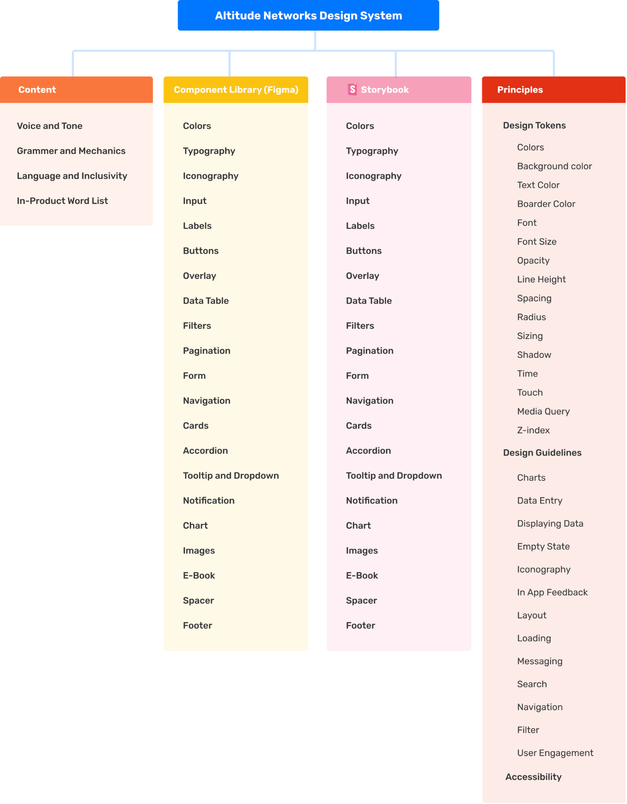
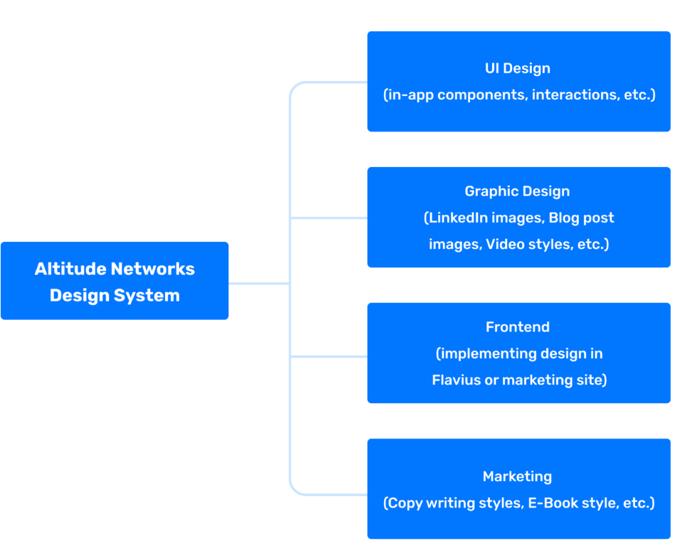
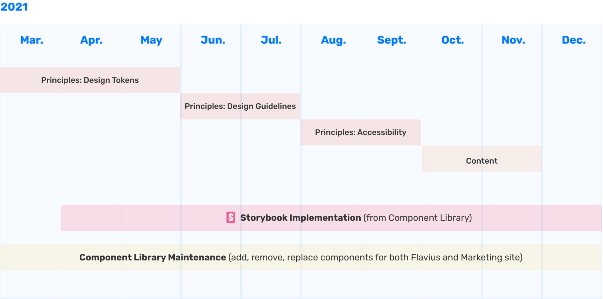
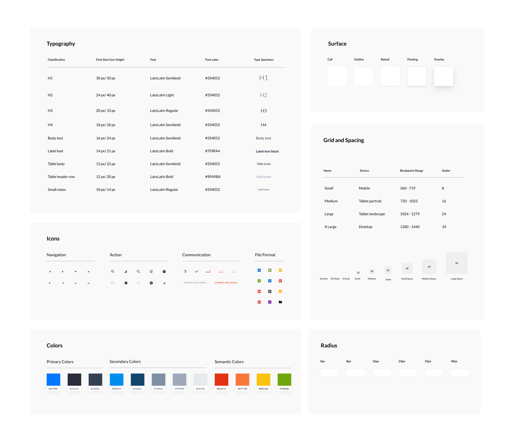
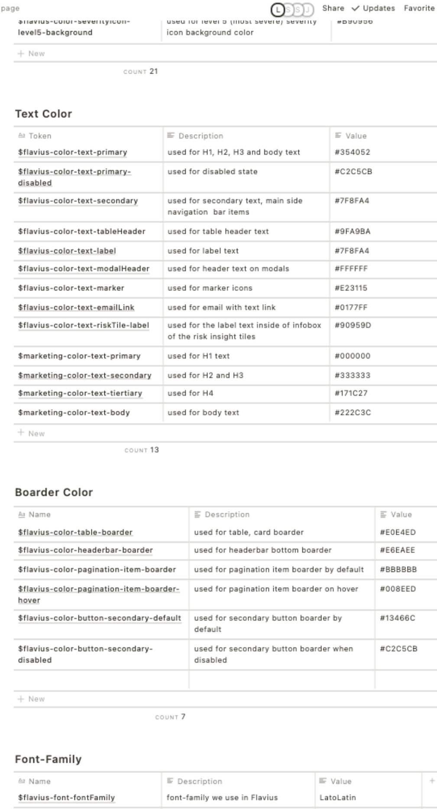

Design System · Altitude Networks · 0 → 1
Altitude Networks Design System
The central place for documenting design decisions: visual style and code.
- Summary:
- As we see many UI components and marketing copies that are used multiple times, I proposed to create a design system for the company. The effort is well received by all stakeholders.
- Design process:
- Propose the structure of Altitude Networks Design System (ANDS) → Propose the roadmap → Creating the component library in Figma, design guidelines in Notion, connect to code in Storybook.
- Team:
- 1 product designer, 1 front-end engineer, 1 customer success manager.
01What is Altitude Networks Design System (ANDS)?
Design System is the central place for documenting design decisions. It improves and sustains a team's shared understanding of visual style through design, code, and other interdisciplinary handoffs.

02The Benefits of ANDS
For frontend devs, it provides a documented reusable codebase.
For graphic designers and UX designers, it keeps the visuals, UI, and interactions of the product coherent.
For copy writers, the content style guide keeps the copy fits into our branding.

03ANDS Implementation Roadmap

04Initial Set of Design Tokens

05Basic Components

06More Complex Components

07Design tokens for front-end codebase (Notion)

Design tokens are named entities that store visual design attributes, they are absolute values used within components. Altitude Networks Design System (ANDS) follows the naming system below for our tokens.
Domain-Component-Category-Variant-State-Mode
For example, the design token for primary button hover color used in app will be named as:
$flavious-button-primary-icontext-hover-ondark
which maps to #0167DC.
I completed the entire design token used in our application, and worked with the front-end developers to include it in the codebase.
(Inspired by Nathan Curtis' article: Naming Tokens in Design Systems.)